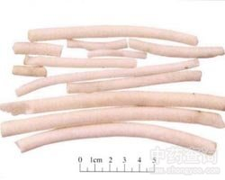

小通草

拼音
Xiǎo Tōnɡ Cǎo
别名
小通花
来源
本品为旌节花科植物喜马山旌节花Stachyurus himalaicus Hook. f. et Thoms.、中国旌节花Stachyurus chinensis Franch.或山茱萸科植物青荚叶Helwingia japonica （Thunb.）Dietr. 的干燥茎髓。秋季割取茎，截成段，趁鲜取出髓部，理直，晒干。
生境分布
生长于山坡或丛林中。分布陕西、甘肃、湖北、四川、贵州、云南、广西、江西等地。主产四川。
药材特点
喜马拉雅旌节花，又名：通草树、通条树。 小乔木，枝梢呈蔓状，高2～3.5米。叶互生，膜质，长椭圆形或卵状披针形，长5～15厘米，宽3～5厘米，先端渐尖，基部楔形至圆形，边缘有小锯齿。总状花序下垂；苞片2，卵状三角形或近三角形；萼片4，长卵形，先端渐尖，浅绿色或近黄绿色；花瓣4，椭圆状卵形，黄色；雄蕊8，花药黄色，花丝细长；子房卵圆形，花柱伸出花冠外，柱头浅裂或头状，浆果球形，径5～8毫米，黑棕色，上有圆孔形的网纹。花期3～4月。果期4～5月。
性状
旌节花：呈圆柱形，长30～50cm，直径0.5～1cm。表面白色或淡黄色，无纹理。体轻，质松软，捏之能变形，有弹性，易折断，断面平坦，无空心，显银白色光泽。水浸后有黏滑感。无臭，无味。 青荚叶：表面有浅纵条纹。质较硬，捏之不易变形。水浸后无黏滑感。
性味
甘、淡，寒。
功能主治
清热，利尿，下乳。用于小便不利，乳汁不下；尿路感染。
用法用量
2.5～4.5g。
化学成分
无化学成分数据
药理作用
1：无药理作用数据
摘录
《中国药典》